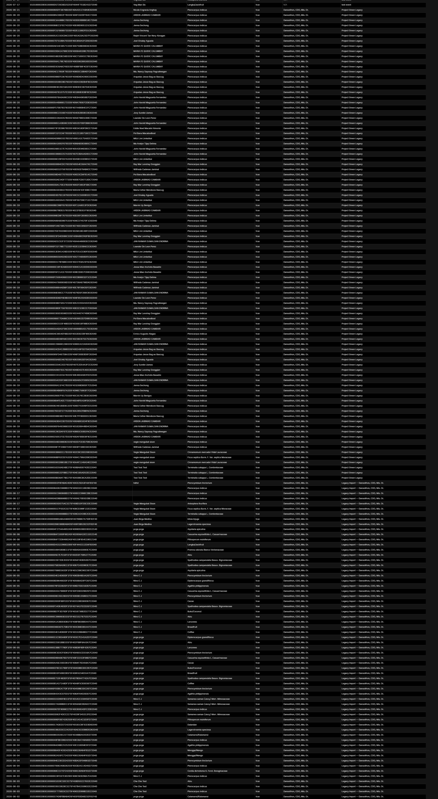

Power BI · Telecom
Customer Churn & Support
How support tickets, contracts, tenure, and monthly charges relate to churn.
View projectSelected Work
A quick look at analytics, dashboard, and reporting work. Choose a project to see its key details.
Power BI · Telecom
How support tickets, contracts, tenure, and monthly charges relate to churn.
View project
Power BI · Telecom
Call volume, agent performance, and customer experience across Q1 2021.
View projectAnalytics · Lending
A concise review of loan outcomes, monthly demand, and exploratory approval models.
View projectApache Superset · Dashboard
A snapshot of the ranked account view, with the full dashboard available to inspect.
View snapshot
Apache Superset · Environmental data
A short preview of the tree records table. Open the image for the full list.
View snapshot